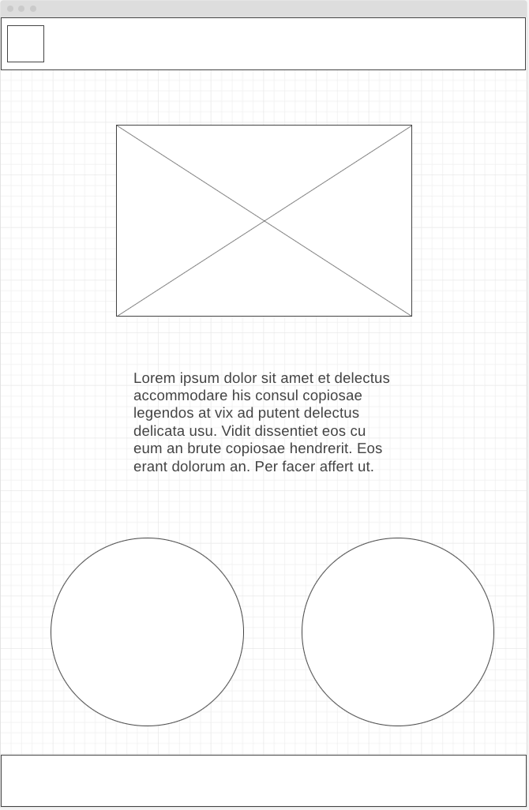

We are professional emotional resilience trainers in certain subjects of mental illness to help people become emotionally resilient and build individual knowledge of mental illness. The information on different kinds of mental matters and some basic applicable tips to deal with them will be posted on this website. Please sign up for a consultation meeting with our specialist by clicking the link on the website. For more information please go to our program page to learn more. We were founded in 2023 by Ruby Ruan. In the era of technological advancement, people often ignore the expression of emotions, which leads to increasing friction and conflicts between people. This website focuses on understanding one's own emotions and developing emotional resilience to help people become emotionally independent.
Images for the Home page

Healthy Thinking Patterns
1. Emotional Values and Skills
2. Our Thoughts Influence Our Emotions
3. Recognizing Inaccurate Thinking Patterns
4. Responding to Triggers
5. Creating More Accurate Thinking Patterns
6. Changing Our Thinking Takes Practice
Images for the Page 2

[Meeting with an Emotional Resilience Specialist can help you understand your own emotional expressions and learn the appropriate amount of intensity to communicate with others in the most effective way of expressing your emotions.
Images for the Page 3

Create three wireframes for your site. One for each page and list them here
[Any additional details about home that the wireframe does not make clear]

[Any additional details about page 2 that the wireframe does not make clear]
[Any additional details about page 3 that the wireframe does not make clear]